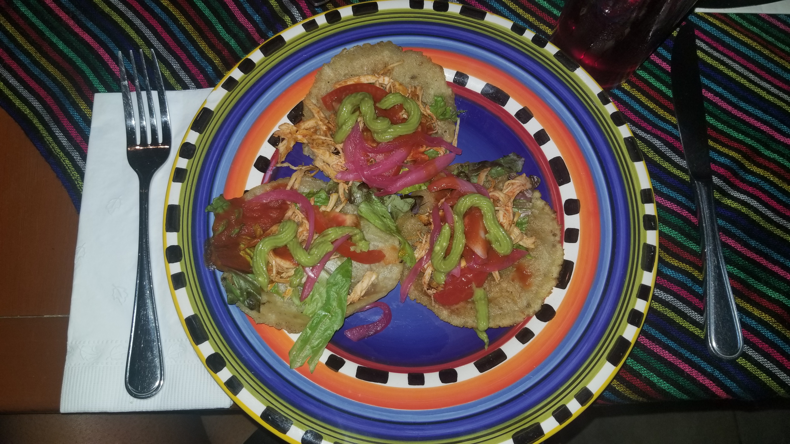
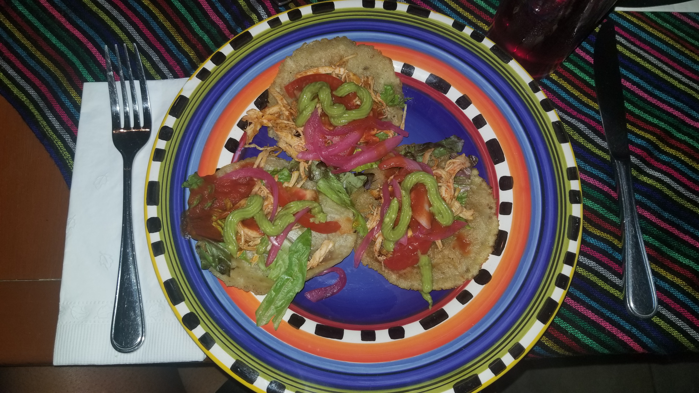
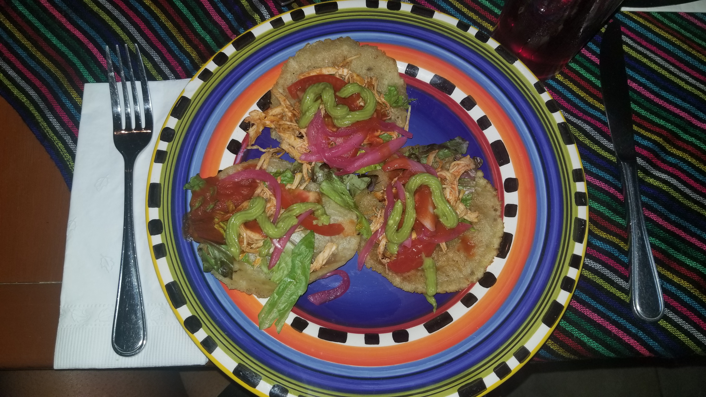

Being able to travel is always an experience in itself. Whether it be locally, within the country, or even internationally.
Here are some of the places that I've had the pleasure of visiting.
Barcelona, Spain
Airline- American Airlines
I purchased my plane ticket completely last minute so it was a bit pricey. I paid around $800 for a roundtrip, straight flight leaving from JFK.
Where I stayed-
With my study abroad program I was given three options, stay in a housing provided by program, stay with a host family, or find my own accomodations.
I chose the housing my program provided, which was ina residential area.This allowed me to learn how to navigate Barcelona and avoid being caught up in areas with high tourist traffic.
Getting Around-
On the first day I arrived to Barcelona, I took a cab from the airport to my resisdency area. I probably took a cab one more time
after that. For the remainder of the month I stayed in Barcelona, I bought a metro pass and traveled by bus and the metro, which were bought extremely
easy to navigate. It was impossible to get lost, especially on the metro (train).
What to do/see/visit in Barcelona-
Las Ramblas
Gothic Quarter
Barceloneta Playa
Placa Catalunya
Montjuic
Weather-
I visited Barcelona during June and July. The tempaerature during these months are hot, humid, and rarely any rainy days.
Final thoughts on Barcelona-
I absolutely loved it! Las Ramblas had a Times Square, NY vibe in terms of crowds, but I definitely enjoyed my walks through other areas.
If you walked far enough you'd end up on Barceloneta Playa. If you are a food lover like me, you will be extremely satisfied with the food scene in this beautiful city.
This trip was little different because I visited Barcelona as a study abraod destination. I lived in Barcelona for one month, June to July,
where I took a spanish speaking course and culture course. The culture course was something I looked forward to because we actually toured the city. I
got the chance to visit one of the first hospitals in Barcelona and got the chance to learn about Guadi and all his contributions to architecture. On the days that I didn't
attend class I got the chance to visit La Sagrada Familia and Freixnet.
I recommend that you keep an eye on your phones and wallets while out in the busy areas because Barcelona is known for pick-pockets. I could tell all of the other tourists got the same advice
because everyone wore their backpacks, fanny packs and purses on the front of their body. Also, dress comfortable. People in Barcelona have a very laid back style. You can get in anywhere with sneakers,
so don't bother wearing anything uncomfortable or trying too hard. The spanish that is spoken is slightly different compared to the spanish spoken in New York, but it is very easy to understand.
Also, every one is more than happy to speak english as well.
I will definitely be visiting Barcelona again!
Cozumel, Mexico

Here are a few things I got to witness on my visit:
What I did-
I visited Cozumel for the day and in order to get to the island you have to take a ferry.
While in Cozumel I got the chance to visit the Mayan ruins. The excursion included a beach visit, the Mayan ruins and a restaurant visit in that order. My tour guide was very knowledgeable about the
Mayan Ruins, which made the visit so much more enjoyable. The restaurant stop was also enjoyable because it included the best tacos I’ve ever eaten, shots of different flavored tequilas, and a
traditional Mexican dance show.
Final thoughts-
My stay in Cozumel was a short one, but I got so much done within the time I spent on the island. Lately I've been obessesed with learning about nature and artifacts, so visiting Cozumel was the breath of fresh air that I needed.
While visiting for the day I got a chance to take a Mayan Ruins tour where I learned so much from the god's they prayed to, to what they ate and how they used earth given resources in their
everyday lives. It was definitely a "you had to be there" experience. The weather was beautiful for the time I visited, in February, and the locals were beyond kind. I hope
to visit again and for a longer period of time. There was so much to take in and so little time!
Punta Cana, Dominican Repulic
One of my favortive caribbean countries to visit was Dominican Repulic.
Airline/Hotel-
This was an all-inclusive package purchased via cheapcaribbean.com. I caught a straight flight with Delta and I stayed
at Grand Bahia Principe.
Weather-
In one word . . . HOT! I visited in early September so the weather was very much summer weather and humidity was no
exception.
What to do-
I spent majority of my time in the resort because they offered so many activities throughout the day. When I did leave
the resort it was usually to do outside excursions, which I purchased with the concierge in my resort, but I did look
them up beforehand via
Tripadvisor.
My resort also offered water excursions which were included in my all-inclusive package.
When I did leave the resort here's what I did:
ATV Riding
Saona Island Excursion
Santo Domingo City Tour
Final Thoughts-
Overall I enjoyed my trip. The excursions weren’t expensive and very enjoyable. I would love to visit the Dominican
Republic again. If I were to change one thing about my trip it would be the resort. Although the resort staff were
great, everything was all inclusive, and there were daily activities, I personally didn’t enjoy the resort's food and how far
it was from the excursions I wanted to enjoy outside of the resort.
About Me
Welcome to Travel Diaries!
Hi, my name's Nakela. I'm a Bronx born, island girl who has been bitten by the travel bug. Nothing makes me happier than straight flights, fun sites, great bites and the ocean of course.
I hope this travel blog inspires you to explore new places and can act as an escape from your everyday life. Feel free to leave a comment!


 
